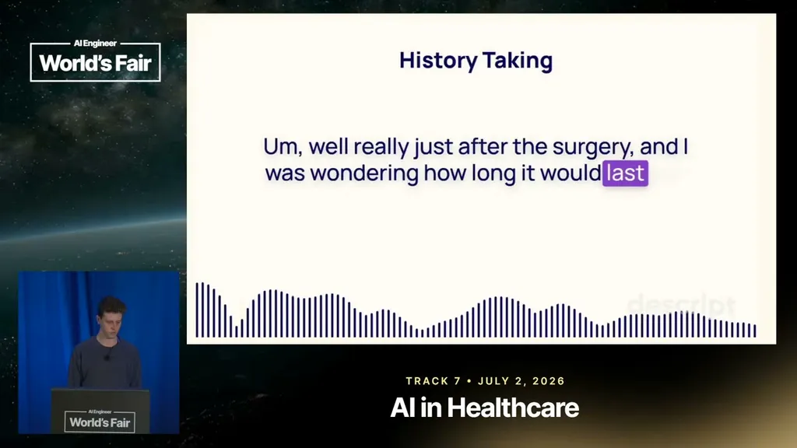
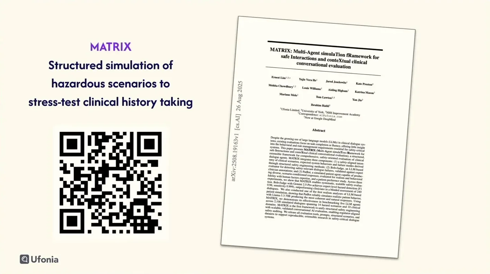
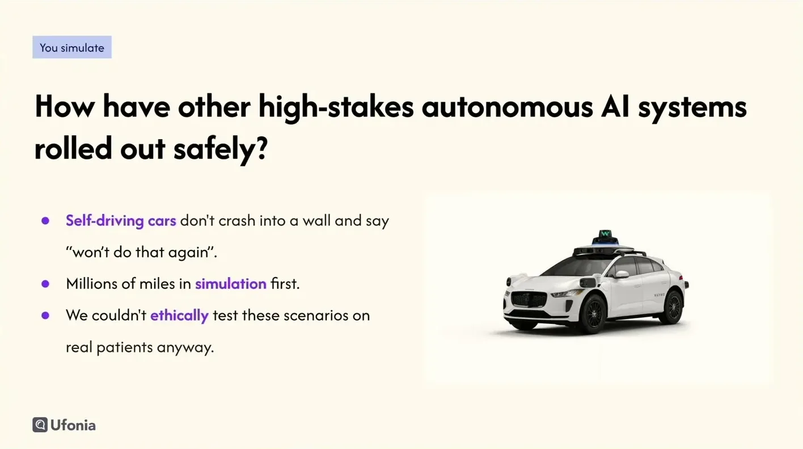
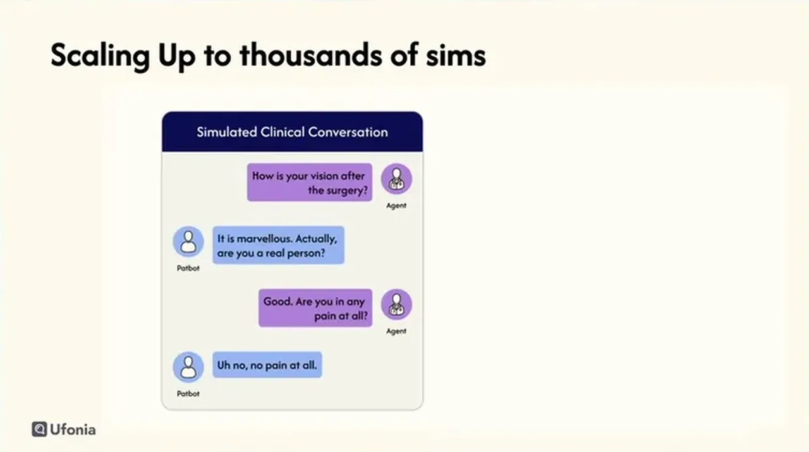
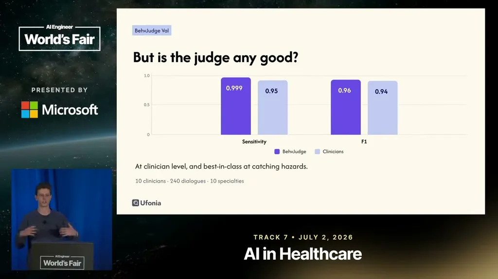
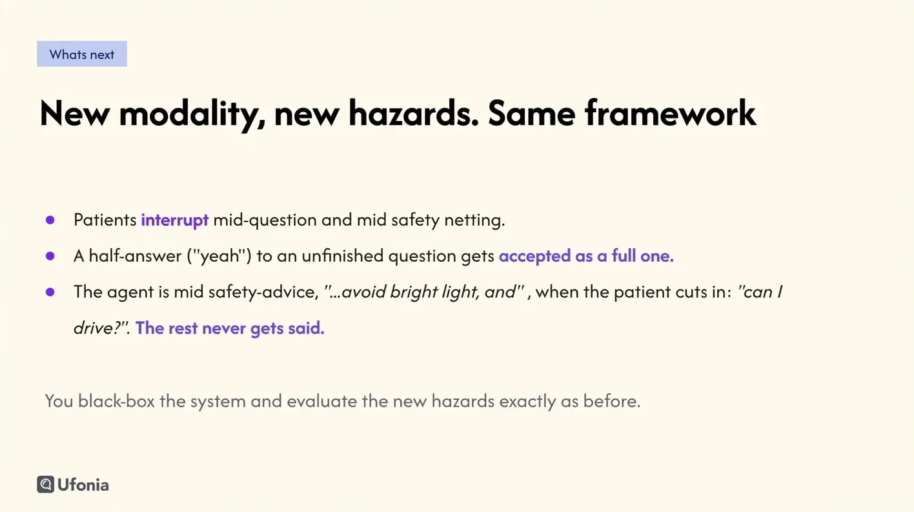

Shipping AI to a Million Patients Without an A/B Test
Ufonia describes Dora the clinical voice agent plus the Matrix LLM-simulated-patient safety gate, a clinician-validated LLM judge, and an automated GEPA prompt optimizer scaling to a million patients.
If you only read one thing
- Standard software safety nets don't apply to patient-facing AI: you can't A/B test on patients, you can't roll back a call already made, and a benchmark score isn't a regulatory defense (c1).
- Dora, Ufonia's clinical voice agent, has made around 200,000 real calls across 20 UK hospitals and is contracted to scale to a million patients over the next 2 years, so Ufonia built a simulation framework called Matrix, using an LLM-played patient, as the pre-deployment safety gate since testing hazards on real patients isn't ethical (c2, c3, c7, c8).
- Manual prompt engineering was replaced with an automated optimizer (GEPA/Jeppa) after finding that formatting changes alone can swing a benchmark by 76 percentage points; a judge LLM validated against 10 clinicians across 240 examples hit an F1 score of 0.96 (c4, c5, c6).
Matrix simulates patient conversations that BevJudge grades and Jeppa uses to optimize Dora before staged real-world testing and scale; this pipeline diagram is inferred from the talks described process, not one slide (ours).
Why this talk is a blueprint, not a take (ours)
Scope: A pre-deployment safety-evaluation and prompt-improvement pipeline for a patient-facing clinical voice agent (Dora), used in place of A/B testing and rollback, which are not ethical or possible on live patients.
A simulation framework (Matrix, with PatBot playing the patient) that stress-tests defined hazard scenarios at scale, an LLM judge (BevJudge) validated against 10 clinicians on 240 examples to grade those simulated conversations, and an automated prompt optimizer (Jeppa/GEPA) that improves Dora against a cost-weighted metric in minutes instead of days. Passing that gate earns the system a staged real-world rollout: user testing, then supervised clinical evaluation, then monitored deployment.
Prerequisites the talk implies:
- A defined, enumerated list of what could harm the user (Ufonia named missed red flags, hallucinated answers, ignored distress) before any evaluation can be built around it
- Clinicians available to label ground truth (Ufonia used 10 clinicians across 10 specialties on 240 examples) so the LLM judge can be validated
- A cost-weighted metric agreed with clinicians, since flat accuracy does not distinguish a missed red flag from a false alarm
- A staged deployment process with clinicians in the loop at every stage, not a one-step launch
What the talk does not say:
- No cost, team size, or timeline figures for building Matrix, BevJudge, or the Jeppa optimization loop
- No description of how autonomy is expanded at each rollout stage beyond "depends on your evidence"
- No numbers on how many hazard categories exist in total, only that there are "20, 30, 40" documented ones plus dozens more
- No detail on how the framework carries over to new modalities like voice beyond the general claim that the same approach applies
If you were to replicate one thing first: Write down the specific list of things that could harm your user for one narrow workflow, then build an LLM-played counterpart to simulate those scenarios before touching the optimizer or the judge.
| Component | What it does (from the talk) | Evidence | Slide |
|---|---|---|---|
| Dora (production voice agent) | Phones patients for clinical conversations like post-op follow-ups and pre-op checks; asks about symptoms, gives advice, and changes decisions, which makes it a regulated medical device | c2 · 03:09 |  |
| PatBot | An LLM conditioned on a defined clinical scenario that plays the patient side of a simulated conversation with Dora | c7 · 06:15 |  |
| Matrix | Simulation framework that runs PatBot against Dora at scale to stress-test clinical history taking before any real patient is exposed | c7 · 06:15 |  |
| BevJudge | LLM judge that grades simulated dialogues against expected behaviors and hazardous scenarios, pass or fail with a reason; validated against 10 clinicians on 240 examples at F1 0.96 | c6 · 10:25 |  |
| Jeppa (GEPA) prompt optimizer | Automated optimizer that iterates on a defined cost-weighted metric to produce an updated prompt in minutes instead of the hours to days manual prompt engineering took | c5 · 12:28 |  |
| Cost-weighted metric | A cost matrix, not flat accuracy, drives optimization so missing a red-flag symptom is scored far worse than a false alarm | c9 · 12:58 | |
| Staged real-world rollout | User testing, then supervised clinical evaluation, then monitored deployment, each stage earning the next, with clinicians in the loop throughout | c10 · 16:05 |  |
Why patient-facing AI can't use the normal ship-and-monitor playbook
- Joselowitz explains that shipping to patients removes the usual software safety nets: A/B testing by randomizing patients into a worse variant is unethical and often illegal, a bad call can't be rolled back once made, and a vendor's benchmark score isn't a defense in a post-incident review.
“you can't actually AB test on patients of course. Randomizing patients into a worse variant is unethical and often illegal.”
said at 01:01Dora's scale and regulatory status
- Dora is a voice AI agent that phones patients for clinical conversations like post-op follow-ups and pre-op checks, taking a time-consuming task off clinicians rather than replacing them.
- It has completed around 200,000 real clinical calls across 20 UK hospitals and is contracted to scale to a million patients over the next two years, plus live deployment in two US clinics with six more signed.
- Because Dora sometimes asks about symptoms or gives advice, it counts as a regulated medical device.
“so far we've done around 200,000 real clinical calls within the UK across 20 hospitals.”
said at 01:34“And we are contracted to scale to a million patients in the next 2 years.”
said at 01:34Matrix: simulating patients as the safety gate
- Ufonia built Matrix, a simulation framework where an LLM (PatBot) plays a patient conditioned on a defined clinical scenario, has a full conversation with Dora, and generates simulated dialogues at scale, treating simulation as the only ethical way to surface hazards before real patients are exposed.
- But Joselowitz is explicit that passing simulated tests doesn't prove Dora helps someone in real life, so simulation only earns the right to move through staged real-world testing (user testing, supervised clinical evaluation, monitored deployment) with clinicians in the loop at every stage.
“Simulation is only the real ethical option we can go with.”
said at 06:15“Passing every test in simulation doesn't prove that Dora actually helps someone in real life.”
said at 15:04Replacing manual prompt engineering with automated optimization
- After finding that formatting changes alone can swing a benchmark by 76 percentage points, making hand-tuned prompts unreliable, Ufonia moved to an automated prompt optimizer called Jeppa (genetic pareto, from the DSPy team) that iterates on a defined cost-weighted metric (e.g., weighting missed red-flag symptoms far worse than false alarms) and produces an optimized prompt in tens of minutes instead of days.
- A separate LLM judge, BevJudge, grades simulated conversations for hazards and was validated against 10 clinicians across 10 specialties on 240 labeled examples, achieving an F1 score of 0.96 and near-perfect sensitivity.
“Formatting changes alone have been seen to swing benchmark by 76 percentage points.”
said at 11:27“manual prompt engineering would take in the order of hours to days, to this is in the hour of minutes”
said at 12:28“it achieved an F1 score of of 0.96.”
said at 10:25
Underlying detail — every claim, typed and timestamped (10)
| Stance | Claim | t |
|---|---|---|
| asserts | Standard software safety practices don't apply to patients: randomized A/B testing on a worse variant is unethical and often illegal. | 01:01 |
| asserts | Dora has completed around 200,000 real clinical calls across 20 UK hospitals so far. | 01:34 |
| asserts | Ufonia is contracted to scale Dora to a million patients over the next two years. | 01:34 |
| warns | Formatting changes alone have been observed to swing benchmark performance by 76 percentage points, making hand-tuned prompts unreliable. | 11:27 |
| recommends | Automated prompt optimization (Jeppa) replaces manual prompt engineering that took hours to days with a process that takes on the order of minutes to an hour. | 12:28 |
| asserts | The BevJudge hazard-detection judge, validated against 10 clinicians across 240 examples, achieved an F1 score of 0.96. | 10:25 |
| recommends | Simulating hazardous scenarios with an LLM-played patient is the only ethical way to test for harm before real patients are involved. | 06:15 |
| warns | Passing every simulated test does not prove the system actually helps a real patient in practice. | 15:04 |
| recommends | The optimizer is given a cost matrix rather than a flat accuracy score, so missing a red flag is weighted far worse than a false alarm. | 12:58 |
| recommends | After simulation, the system moves through user testing, then supervised clinical evaluation, then monitored deployment, with clinicians in the loop at every stage. | 16:05 |
Machine-readable copy embedded in this page (script#ontology) and in the corpus ontology.